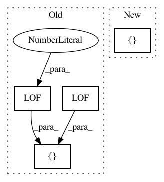

f72b08625855cf00d3238fa43955819e428378e9,notebooks/benchmark.py,,,#,16
Before Change
time_df = pd.DataFrame(columns=df_columns)
// initialize a set of detectors for LSCP
detector_list = [LOF(n_neighbors=10), LOF(n_neighbors=20), LOF(n_neighbors=30),
LOF(n_neighbors=40), LOF(n_neighbors=50)]
for j in range(len(mat_file_list)):
mat_file = mat_file_list[j]
After Change
// TODO: add neural networks, LOCI, SOS
// Define data file and read X and y
mat_file_list = [
// "arrhythmia.mat",
// "cardio.mat",
// "glass.mat",
// "ionosphere.mat",
// "letter.mat",
// "lympho.mat",
// "mnist.mat",
// "musk.mat",
// "optdigits.mat",
// "pendigits.mat",
// "pima.mat",
// "satellite.mat",
// "satimage-2.mat",
"shuttle.mat",
"vertebral.mat",
"vowels.mat",
"wbc.mat"]
// define the number of iterations
n_ite = 10
n_classifiers = 10
In pattern: SUPERPATTERN
Frequency: 3
Non-data size: 4
Instances
Project Name: yzhao062/pyod
Commit Name: f72b08625855cf00d3238fa43955819e428378e9
Time: 2019-03-29
Author: yuezhao@cs.toronto.edu
File Name: notebooks/benchmark.py
Class Name:
Method Name:
Project Name: yzhao062/pyod
Commit Name: d4a6437038ab505c137a1c1e65d61025fae55639
Time: 2018-11-24
Author: zain.nasrullah@ca.pwc.com
File Name: examples/temp_do_not_use_lscp.py
Class Name:
Method Name:
Project Name: yzhao062/pyod
Commit Name: 4a8c7180551071702b27a49852cd0cf2e48b40f6
Time: 2019-05-29
Author: zhaoy@cmu.edu
File Name: examples/lscp_example.py
Class Name:
Method Name: